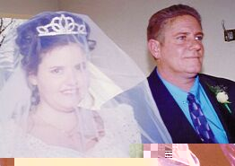
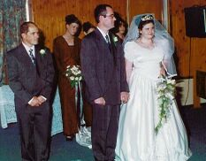
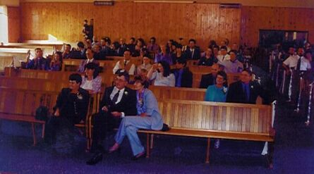
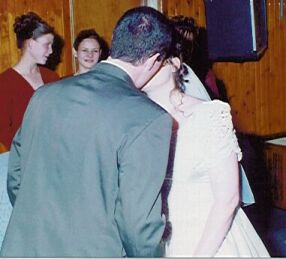

[Home] [Introduction] [Preperation] [Church] [Just Married] [Reception] [Honeymoon]
We were married in the Sasolburg Baptist Church.
When I got to the church, I asked the minister if William was nervous, when I was walking down the isle, William was wringing his hands together, and I could have fallen in love with him all over again. If I didn't have my Dad's hand to hold onto I guess I might have been doing the same. What was really nerve racking was the fact that we had to stand facing everyone, but it made the ceremony really special.


I don't know who was more nervous my Dad or me.
I think I clutched William's hand so hard during the service, because
I was so scared of messing up my vows

I am so glad we got to spend our day with such wonderful
friends and family.

It was the greatest feeling, when we kissed as husband and wife. I have
to say thank you to the Lord that he made it possible
[Home] [Introduction] [Preperation] [Church] [Just Married] [Reception] [Honeymoon]